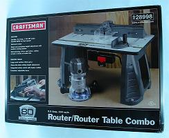
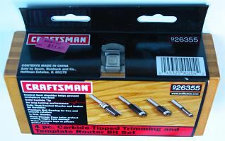
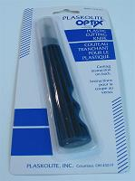

Example Ingredients
This section shows example products I have acquired and prefer in making joystick controllers. In no way are all these used to make one controller. I just decided to put together a list showing my favorite items and many of my purchases and what I paid and where I got them, and give some insight into how they (or similar things) are obtained. Some utilized tools will not get a purchase mention because I had them sitting around long before making a controller.
Using this list can help figure what and how to acquire things, and estimate some costs. There are many, many sets of ingredients that can be used to put a controller together. You do not need to get exactly what is shown. This is not meant to advertise.
This section will likely remain fairly unorganized.
Favorites
Here is a list of some of my favorite items to use in making a controller. Some descriptions will be more specific than others. Note the attributes of listed items if you choose not or cannot get the same item. This subsection will probably change as my preferences change. The list below contains most everything needed to make a large variety of great controllers.
Joysticks: Sanwa JLF or Seimitsu LS-33 (fighting games), Seimitsu LS-40 (other games)
Buttons: Sanwa OBSN-30, Seimitsu PS-14-K-N (long switch modded), 24mm of matching colors
Wood: MDF, hardwoods
Acrylic: Plexiglas (control panel), lexan (bottom panel)
Metal: Stainless steel, aluminum (more to come as I have not worked with it much yet)
Finish: Mineral spirits, polyurethane, clear wax, sandpaper, rubbing and polishing compounds, primer, spray paint, clear coat
Safety: Heavy gloves, rubber gloves, safety glasses, ear plugs, respirator, work table, strong lighting, push stick
Power Tools: Table saw (I have a Dewalt DW745 I really like), drill press (I have a Delta DP300L I like), router w/ table (each with good quality), cheap rotary tool with many bits
Jigs and Fixtures: Stop blocks, mounting plate templates, table saw sled, rip fence templates
Drill Bits: Brad-point (variety), metal-grade countersink (about 3/8" diameter), hole saws (24mm and 30mm), forstners (1/2", 24mm, 1-1/8", 30mm, 1-1/2")
Router Bits: Hinge mortising pattern 1/2" x 1/2" (flush bearings on shank), trim 1" x 1/2" (flush bearings on tip), chamfer 45 degrees, roundover small, roundover large, hinge mortising large, 5/8" bushing
Fasteners: #4 and #10 screws bolts washers and nuts (insert nuts too), dowels (wood), wood glue, white glue, clamps (variety), masking tape, double-sided tape 1" x 1296" roll (big fan), hot glue gun
Hand Tools: Sandpaper (variety of 50-2000 grit), sanding block, screwdrivers (slotted and phillips in various sizes), pencils, markers, utility knife, needle-nose pliers, diagonal cutters, framing square (about 18" long), combination square (about 12" long with centimeters also), wire cutter/stripper 16-26 AWG (no crimper)
PCB: PS1 digital H, PS2 Dual Shock A (late version), Xbox 360 Mad Catz 4716 (late version), Pelican/Real PS3 converter, XCM converter, 8.2K and 10K resistors, digital multimeter
Wire: Velleman K/MOW or K/MOWM 24 AWG insulated
Terminals: Single-barrel 20-26 (and 14-16) AWG noninsulated .110" and .187" quick disconnects (I solder wire to them), small European-style strips, D-sub, USB
Soldering: Soldering station with helping hands, thin solder, soldering iron 15-20 watts with thin tip, flux paste, desoldering braid
Rubber Feet: 1/2" diameter 1/4" depth or less screw-in
Printer: Good quality printer that can print 10-3/4" long, using thick paper
Products
This subsection centers on where to acquire products and examples of them. In the following, "B&M" is short for "brick and mortar", ie a local building. If the item was ordered online, it will say "site".
Joysticks and Buttons
No need to bother putting an exact list of so many joysticks and buttons. I do not know many places to get them; I got all them online at a few places. Many of my parts came from Lizard Lick Amusements (link), which I can strongly recommend; they ship very fast. Many of my parts also came from Akihabara Shop (link); though their shipping time takes a bit longer, they have many products others do not. I have also ordered from Happ (I do not like their parts now though), Groovy Game Gear (link), and Ultimarc (link), and they all came through. There are other links in the references section.
Screws, Pliers, Wrench, Nuts, Bolts, Washers, Corner Brace, Hand Saw, Brush, Etc
Many standard hardware products will be found in any store with a hardware section; the larger the hardware section, the greater the selection.
Power Tools
Power tools of different kinds are found in stores with a large hardware section. Because they tend to be fairly expensive, it can pay to shop around and wait for sales.

Images: Router / Router Table Combo 9 28998 (Sears B&M $60 big sale); Velleman Rechargeable Rotary Tool (Electronics123 $17 (
link); good cheap ones also at Harbor Freight)
Safety Gear
Safety gear is found at most any store with a hardware section.
Images: Safety glasses (Sears B&M $3); Moby push stick (Woodcraft B&M $5.50 (
link)); Ear Muffs (Harbor Freight B&M $2)
Drill Bits
Drill bits are found at most any store with a hardware section, more specialized ones at specialized stores.

Images: Drill bit set (Lowes B&M $4); Milwaukee Hole Saw Arbor 49-56-6960 (Industrial Supply B&M $7); Milwaukee Hole Saw 1-3/16" 49-56-0055 (Industrial Supply B&M $5); Milwaukee Hole Saw 15/16" 49-56-0035 (Industrial Supply B&M $5) (
link); Wood River 3/8" Countersink (Woodcraft B&M $8 (
link)); Wood River Forstner Bits (Woodcraft B&M $5-7 each (
link)); Ridgid Cobalt Drill Bit Set (Home Depot B&M $20); 1/2" Countersink (Harbor Freight B&M $1); 1/16" to 1/2" by 1/16" Increments Titanium Twist Bit Set (Harbor Freight B&M $15); Glass Bit Set (Harbor Freight B&M $8); Brad-Point Bit Set (Harbor Freight B&M $5)
Router Bits
Varieties of router bits are found at stores with an extensive tool section. They tend to be kind of expensive, so finding them on sale or clearance can be helpful. If you plan on working a lot with a router, getting a large router bit set could be a way to consolidate costs.

Images: Craftsman Trimming Bits 9 26355 (Sears B&M $12 clearance); Porter Cable 3/8" Straight Flute 2907630 (Home Depot B&M $8 clearance); Porter Cable 3/16" Beading 2907662 (Home Depot B&M $8 clearance); Porter Cable 1/2" Beading 2880126 (Home Depot B&M $10 clearance); Porter Cable 1-1/4" Hinge Mortising 2880139 (Home Depot B&M $8 clearance); Porter Cable 1/4" Rabbeting 2907681 (Home Depot B&M $8 clearance); Wood River Router Bits (Woodcraft B&M $5 each big sale (
link))
Router Bushings
Router bushings are found in specialty woodworking stores.
Images: Wood River Router Bushing 5/8", Fastener (Woodcraft B&M $6 each (
link))
Dowels
Dowels are found at most any store with a large hardware section.
Images: Dowels 1/4" Quantity 36 (Home Depot B&M $2); Dowels with Centers and 1/4" Bit (Home Depot B&M $5); Dowels with Centers and 1/4" Bit (Harbor Freight B&M $3)
Glue
Various glues are found in any store with a hardware section.

Images: Arrow Glue Gun (Lowes B&M $3; moderate quality), Arrow Hot Glue Sticks Quantity 24 (Lowes B&M $5); Titebond 4oz Wood Glue (Lowes B&M $2); Titebond 4oz White Glue (Lowes B&M $2)
Tape
Various tape is found in any store with a hardware section, more specialized ones at specialized stores.
Image: Double-sided Tape 1" x 36 yards (Woodcraft B&M $15 (
link))
Clamps
Various clamps are found in any store with a hardware section, more specialized ones at specialized stores.


Images: Husky 2", 3" Clamps (Home Depot B&M $2.50, $5 each); 12" Clamp (Home Depot B&M $10); Small Clamp (Home Depot B&M $.50); Woodcraft Framing Clamp, Accessory Kit (Woodcraft B&M $25 (
link); Harbor Freight $14 version (
link)); 2" Clamp (Harbor Freight B&M $1 each); 4" Clamp (Harbor Freight B&M $2.50 each); 12" Clamp (Harbor Freight B&M $2)
Measuring Tool
Various measuring tools are found in any store with a hardware section, more specialized ones at specialized stores.
Images: Empire Steel Framing Square (Home Depot B&M $6); Stanley Combination Square 46-028 (Industrial Supply B&M $10 (
link))
Sandpaper
Various sandpapers are found in any store with a hardware section, more specialized ones at specialized stores.

Images: Norton Wet Sandpapers (Woodcraft $4.50 each B&M (Woodcraft B&M $8 (
link)); Warner Sanding Block (Lowes B&M $3); Assorted 220-1200 Grit Sandpaper (Harbor Freight B&M $4)
Screwdrivers
Various types of screwdrivers are found in most stores with a hardware section.
Images: Triwing screwdriver (DealExtreme $1 shipped in 15 days (
link)); Velleman Assorted Screwdrivers (Electronics123 $3 (
link)); Velleman Assorted Tool Set (Electronics123 $11 (
link))
Wood Chisel
Various chisels are found in any store with a large hardware section.
Image: Stanley 1/4" Wood Chisel (Lowes B&M $9)
Plastic Cutting Knife
Plastic cutting knives is found in stores that also sell acrylic glass.

Image: Plaskolite Plastic Cutting Knife (Home Depot B&M $3)
Wire
Insulated wire is found in hardware or specialized electronics stores. Getting nice 20-26 AWG wire is most likely found in a specialized electronics store though.
Images: Radio Shack Solid Hook-Up Wire 22 AWG 3x30' 278-1221 (Radio Shack B&M $6); Various 8-50 Conductor 24 AWG Solid Outdoor Wire (Electronics Plus $.30-$1.30 per foot (
link)); Velleman Assorted 24AWG Solid Wire K/MOWM 200 Feet (Electronics123 $9 (
link)); Velleman Assorted 24AWG Stranded Wire K/MOW 200 Feet (Electronics123 $8 (
link))
Cable/Wire Ties and Mounts and Wire Clips
Cable ties and wire clips are found in hardware or specialized electronics stores.
Wire Connects and Terminals
Wire connects and terminals are found in hardware or specialized electronics stores. You will find a better selection at a specialized electronics store. .110" female quick disconnects are not easily found and are best ordered online.
Images: Female Quick Disconnects (all purchased for $.10 each from Lizard Licks Amusements (
link)): .110"; .187"; .250"; Radio Shack Quantity 16 Terminals (all purchases for $2 each pack from Radio Shack B&M): Butt; Spade; Ring; 3M Single-Barrel .110" 22-26AWG Quick Disconnects Quantity 100 70F-110-20, Insulated Quantity 50 70F-110-20-PB (McMaster 69525K95 $7, 7060K71 $11.50 (
link))
Wire Cutter/Stripper/Crimper
A wire tool is found in hardware or specialized electronics stores.
Image: Craftsman 16-26AWG Wire Cutters/Stripers 3482544 (Sears B&M $10)
Terminal/Barrier/Jumper Strip
Various strips are found in specialized electronics stores.

Images: Radio Shack 4-Position Terminal Strip 274-658 (Radio Shack B&M $2); Radio Shack 12-Position European Terminal Strip 274-680 (Radio Shack B&M $2.50)
Solder
Electronics-quality solder with a rosin-core is found in specialized electronics stores.
Images: Radio Shack .022 Rosin-Core Solder 64-013 E (Radio Shack B&M $4.50); Velleman Lead-Free Solder (Electronics123 $2 (
link))
Soldering Iron
A soldering iron that works for electronics is found in specialized electronics stores. Remember, it needs a small tip.
Images: Radio Shack 15-Watt Soldering Iron 64-2051 (Radio Shack B&M $9); Velleman 20W Soldering Iron, Replacement Heads (Electronics123 $5 (
link))
Desoldering Tool
A desoldering tool are found in specialized electronics stores.
Image: Velleman Desoldering Braid (Electronics123 $1 (
link))
Soldering Station
A soldering station is found in specialized electronics stores.

Images: Velleman Helping Hands (Electronics123 $4.50 (
link)); Velleman Soldering Iron Stand (Electronics123 $2.50 (
link))
D-Sub/USB Connectors
Cord connectors are found in specialized electronics stores.
Image: D-Sub Hood, Female, Male Connectors (Electronics123 $.25 each (
link))
Project Box/Enclosure
Project boxes are found in most specialized electronics stores.
Image: Radio Shack 4"x2"x1" Project Box 270-1802 (Radio Shack B&M $3)
Resistors
Resistors are found in specialized electronics stores.
Multimeter
Multimeters are found in most specialized electronics stores.
Images: Radio Shack Multimeter 22-810 (Radio Shack B&M $20); Cheap (but decent) Multimeter (Harbor Freight B&M $3)
Heat-Shrink Tubing
Heat-shrink tubing can be found in specialty electronics stores.
Image: InsulTab 3/16" to 3/32" Heat-Shrink Tubing Clear (McMaster, get it by the foot instead of a big roll (
link))
Rubber Feet/Bumpers/Grippers/Pads
Rubber feet are found in most stores with a hardware section. Finding a good variety for what you need can be a bit difficult though.


Images: Shepherd 1" Quantity 4 Anti-Skip Pads (Home Depot B&M $2); Shepherd 7/8" Quantity 4 Screw Bumpers (Home Depot B&M $2); Magic Bumpers 7/8" Quantity 8 Bumpers (Shopko B&M $1.50 clearance); Magic Bumpers Variety Bumpers Pack (Shopko B&M $3 clearance); Rubber Feet 1/2" x 1/4" Quantity 100 (McMaster 9540K51 $7 (
link)); Rubber Feet 1/2" x 1/4" Quantity 10 (Digi-Key 720K-ND $2 ((
link))
E-Ring
Replacement E-rings can be found in hardware stores. You may want to replace the C-ring on the LS-32 with a 7/16" E-ring.
Image: E-Ring 7/16" Quantity 2 (Home Depot B&M $.50)
Finishes
Various finishes are found in any store with a hardware section, more specialized ones at specialized stores.


Images: Behlen Rubbing Compounds (Woodcraft B&M $8 each (
link)); Mineral Spirits 1 Quart (Lowes B&M $6); Crystal Clear Paste Wax (Woodcraft B&M $10 (
link)); Minwax Polyurethane Spray (Lowes B&M $8)
Miscellaneous

Images: Incra Miter Gauge V27 (Woodcraft B&M $52 sale); Toilet Beeswax Gasket (Home Depot B&M $1); Foam Brush Set (Harbor Freight B&M $1); Snap Ring Pliers Set (Harbor Freight B&M $5); Utility Knife Set (Harbor Freight B&M $2)